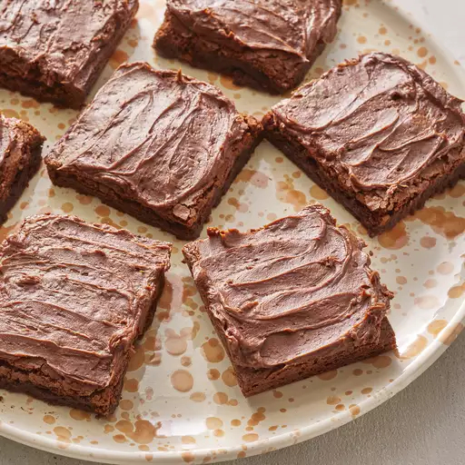

Brownies

Description
This brownie recipe will make your mouth water! It makes rich, fudgy brownies that
always turn out perfectly. They're topped with homemade chocolate frosting to make
the best brownies ever!
You'll find a list of ingredients and step-by-step instructions in the recipe below:
Ingredients
- ½ cup butter
- 1 cup white sugar
- 2 eggs
- 1 teaspoon vanilla extract
- ⅓ cup unsweetened cocoa powder
- ½ cup all-purpose flour
- ¼ teaspoon salt
- ¼ teaspoon baking powder
Frosting:
- 3 tablespoons butter, softened
- 3 tablespoons unsweetened cocoa powder
- 1 tablespoon honey
- 1 teaspoon vanilla extract
- 1 cup confectioners' sugar
Steps
- Preheat the oven to 350 degrees F (175 degrees C). Grease and flour an 8-inch,
square pan.
- Melt 1/2 cup butter in a large saucepan. Remove from heat, and stir in sugar,
eggs, and 1 teaspoon vanilla. Beat in 1/3 cup cocoa, flour, salt, and baking
powder. Spread batter into prepared pan.
- Bake in the preheated oven until top is dry and edges have started to pull away
from the sides of the pan, about 25 to 30 minutes. Let cool briefly before
frosting.
- To make the frosting: Combine softened butter, confectioners' sugar,
3 tablespoons cocoa, honey, and 1 teaspoon vanilla extract in a bowl. Stir until
smooth. Frost brownies while they are still warm.